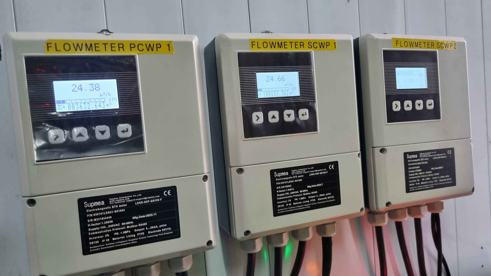
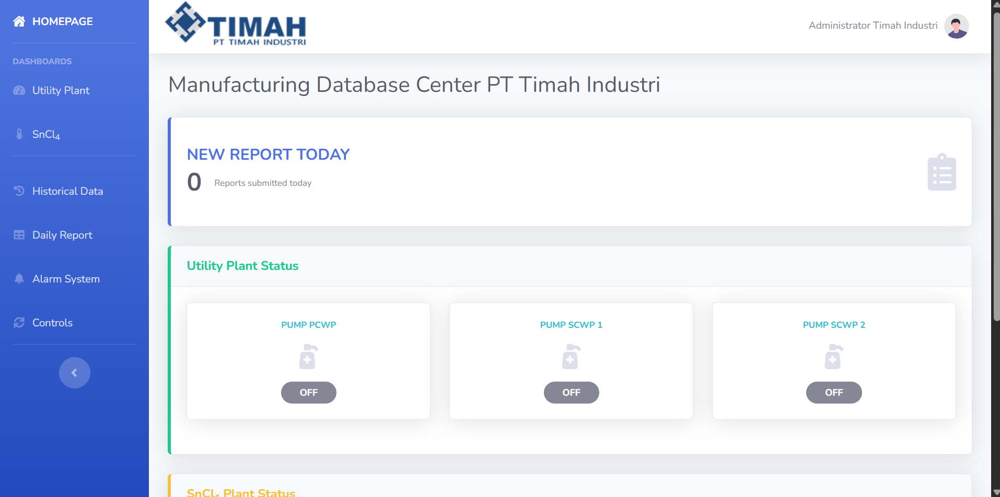
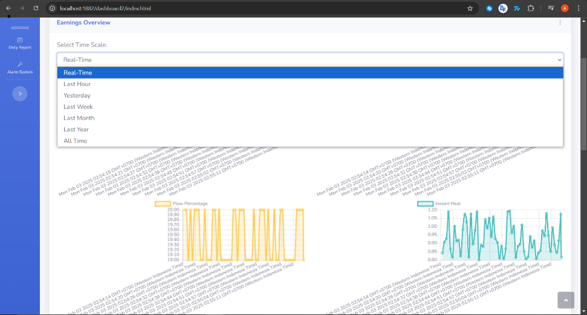

← Back to projects
Centralized Data Acquisition
PT Timah Industri · Maintenance Department · Internship Project
Centralized Data Acquisition
and Monitoring System
Centralized acquisition and browser-based monitoring of distributed industrial flowmeter measurements for real-time visibility and historical review.
System overviewInternship project
Project Overview
From distributed readings to shared visibility.
- Background
- Flowmeter readings were available locally from instruments installed at several monitored points.
- Problem
- Checking distributed measurements individually limited convenient centralized monitoring and historical review.
- Result
- The project integrated these measurements into a centralized system for acquisition, storage, and browser-based realtime and historical monitoring.

System architecture
Field acquisition to web monitoring.
01SensorsProcess measurements from field instrumentation.
02Modbus RTU / RS-485Industrial serial communication.
03ESP32Reads, structures, and forwards measurements.
04MQTTPublish/subscribe telemetry transport.
05Network / InternetCarries monitoring data between systems.
06WebSocketRealtime browser-data delivery.
07MySQLTimestamped historical measurement storage.
08Web Monitoring DashboardRealtime and historical monitoring interface.
Measurements & Engineering Relationships
Monitored values and physical relationships.
Real-Time Process Variables
- Flow Rate m³/h
- Volumetric water flow through the monitored line.
- Flow Velocity m/s
- Average water velocity through the pipe.
- Flow Percentage %
- Current flow relative to rated capacity.
- Instantaneous Heat GJ/h
- Thermal-energy transfer rate based on flow and temperature difference.
- Input Temperature °C
- Water temperature entering the monitored circuit.
- Output Temperature °C
- Water temperature leaving the monitored circuit.
Accumulated Values
- Positive Flow m³
- Cumulative forward flow volume.
- Negative Flow m³
- Cumulative reverse flow volume.
- Heating Energy GJ
- Cumulative heating energy.
- Cooling Energy GJ
- Cumulative cooling energy.
Flow Relationship
v = Q / AFlow velocity is related to volumetric flow and pipe cross-sectional area.
Thermal Relationship
Q̇ = ṁ cp (Tout − Tin)Thermal-energy transfer rate depends on water flow and the inlet–outlet temperature difference.
Measurement Validation
0.407 GJ/h ≈ 0.404 GJ/hAt approximately 27 m³/h and ΔT ≈ 3.6°C, the calculated value is approximately 0.407 GJ/h, closely matching the observed flowmeter reading of 0.404 GJ/h.
Technical documentation
System evidence.


Portfolio reconstruction
Interactive Dashboard Simulation
A public portfolio reconstruction using physically consistent synthetic telemetry generated by an ESP32. It is not connected to PT Timah Industri infrastructure.
Launch Live DemoLive dashboard previewPreview unavailableThe video could not be loaded.